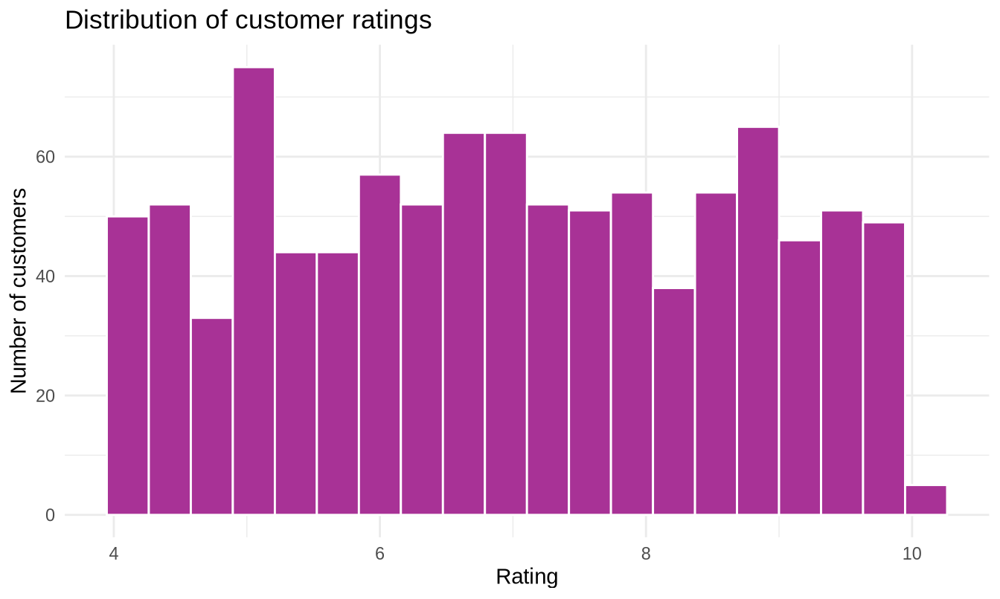
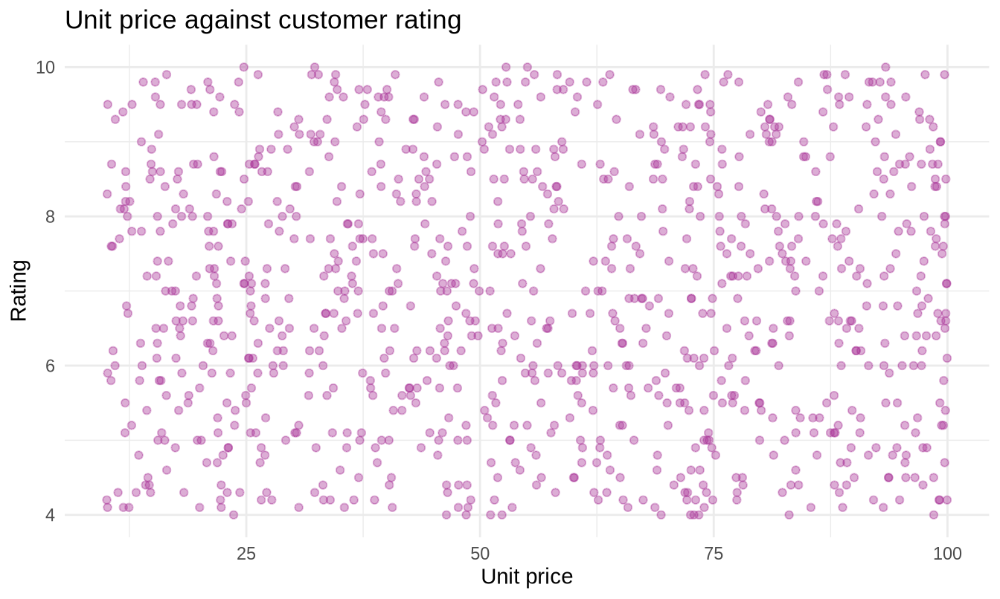
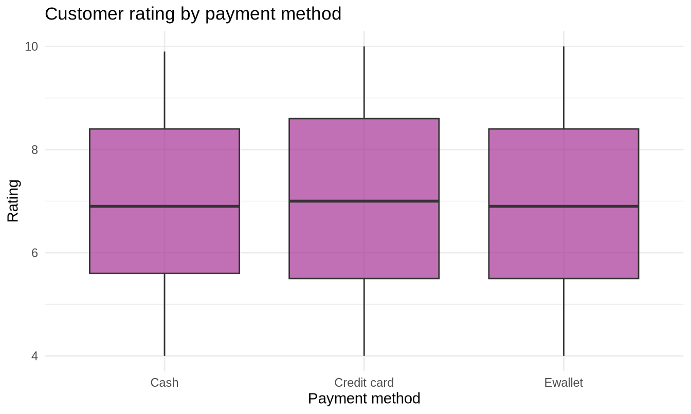
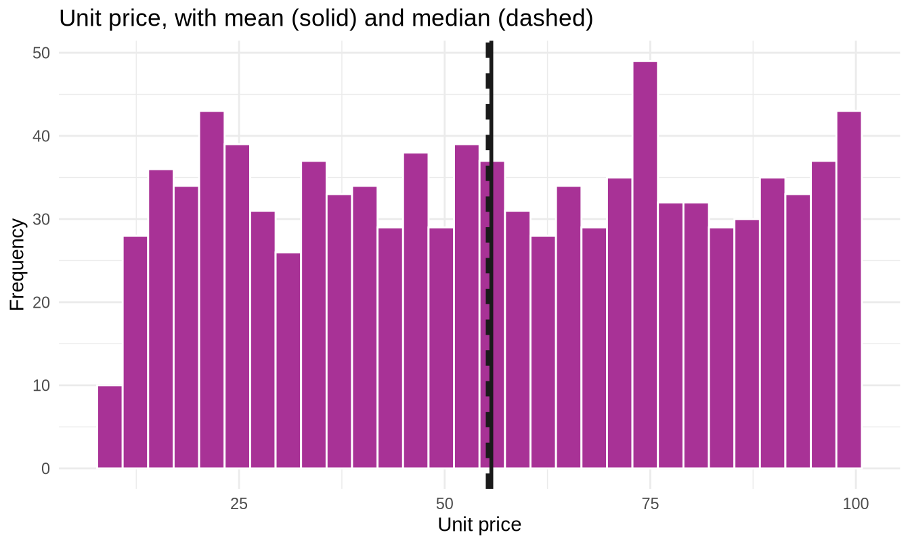
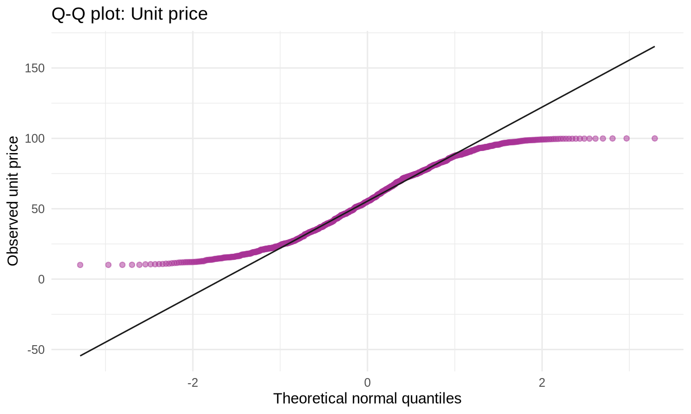
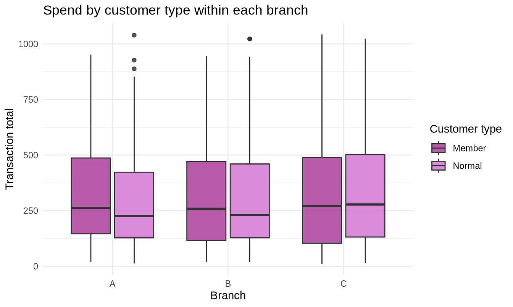
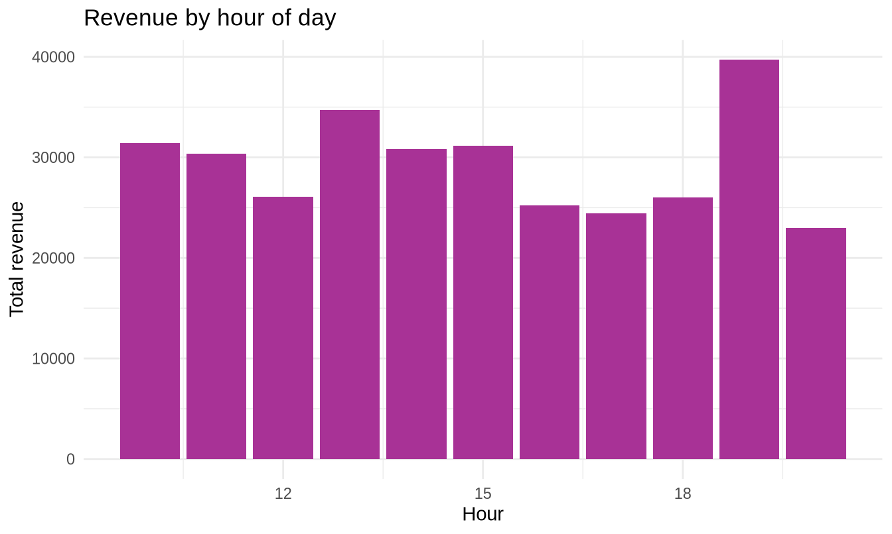

Show the code
library(tidyverse)
library(readxl)
library(moments)
sales <- read_excel("../data/supermarket_sales.xlsx")307102 Descriptive Statistics for Business | University of Petra
Every chunk here runs, and every numeric result quoted in the commentary has been verified against the standard 1,000-row supermarket_sales.xlsx. If your copy of the file has been edited, re-run the notebook and adjust the quoted figures.
Section headings match the student notebook so the two can be read side by side.
library(tidyverse)
library(readxl)
library(moments)
sales <- read_excel("../data/supermarket_sales.xlsx")sales |>
count(`Customer type`) |>
mutate(percent = round(n / sum(n) * 100, 1))#> # A tibble: 2 × 3
#> `Customer type` n percent
#> <chr> <int> <dbl>
#> 1 Member 501 50.1
#> 2 Normal 499 49.9Expected pattern. Members and Normal customers split close to 50/50.
Discussion point worth raising. A near-even split is itself a finding. If the chain runs a membership programme, roughly half of transactions being non-member means half of all sales generate no customer-level data at all. Everything the business “knows” about its customers is therefore based on a self-selected half - and members are, almost by definition, not typical shoppers. This is a good early introduction to selection bias, which returns in Part 3.
ggplot(sales, aes(x = Rating)) +
geom_histogram(bins = 20, fill = "#A83296", colour = "white") +
labs(title = "Distribution of customer ratings",
x = "Rating", y = "Number of customers") +
theme_minimal()
Expected pattern. Not a bell curve. The distribution is broadly flat across the middle of the scale with a fairly hard floor around 4 and ceiling around 10.
Why this is a useful teaching moment. Students arrive expecting everything to be normally distributed, because every textbook picture is. Confronting a flat, bounded distribution in week one prevents that assumption from hardening. It also sets up section 7 - when the Q-Q plot for Rating bends away at both ends, students have already seen why.
If a class discussion opens up here, the useful question is: what would ratings look like if customers only bothered to leave one when they were delighted or furious? That would give a U-shape, which is what many real review platforms actually show. The fact that this dataset does not look like that suggests ratings were collected systematically rather than volunteered.
sales |>
group_by(`Product line`) |>
summarise(
transactions = n(),
mean_rating = round(mean(Rating), 2),
median_rating = round(median(Rating), 2)
) |>
arrange(desc(mean_rating))#> # A tibble: 6 × 4
#> `Product line` transactions mean_rating median_rating
#> <chr> <int> <dbl> <dbl>
#> 1 Food and beverages 174 7.11 7.3
#> 2 Fashion accessories 178 7.03 6.95
#> 3 Health and beauty 152 7 7.2
#> 4 Electronic accessories 170 6.92 6.7
#> 5 Sports and travel 166 6.92 6.7
#> 6 Home and lifestyle 160 6.84 7Expected pattern. All six product lines land within roughly half a point of one another, somewhere near 7.
The point of the exercise. Students will want to declare a “winner”. Push back: a gap of 0.3 on a 10-point scale, across groups of about 160 transactions each, is almost certainly not a real difference. Ask them what they would need in order to claim it was - and let the answer be unsatisfying for now, because that is exactly what Part 4 supplies.
Note also that mean and median are close for every product line here, which is what you expect from a roughly symmetric, bounded variable. Contrast with Total, where the two diverge noticeably.
r_q1 <- quantile(sales$Rating, 0.25)
r_q3 <- quantile(sales$Rating, 0.75)
r_iqr <- IQR(sales$Rating)
tibble(
q1 = r_q1,
q3 = r_q3,
iqr = r_iqr,
lower_bound = r_q1 - 1.5 * r_iqr,
upper_bound = r_q3 + 1.5 * r_iqr
)#> # A tibble: 1 × 5
#> q1 q3 iqr lower_bound upper_bound
#> <dbl> <dbl> <dbl> <dbl> <dbl>
#> 1 5.5 8.5 3 1 13sales |>
filter(Rating < r_q1 - 1.5 * r_iqr | Rating > r_q3 + 1.5 * r_iqr) |>
nrow()#> [1] 0Expected result: zero outliers.
This is the most valuable exercise in the section, precisely because the answer is nothing. Students who predicted “a few” need to understand why they were wrong.
Q1 is 5.5 and Q3 is 8.5, so the IQR is 3 and the bounds come out at 1 and 13. The ratings themselves only run from 4 to 10. The flagging thresholds sit outside the range the scale can even produce, so no value could ever be flagged. A bounded variable with a wide interquartile range cannot generate IQR outliers. It is structurally impossible.
Two conclusions to draw out:
Contrast with Total, where the same rule does flag a handful of points - and where, as the notebook argues, almost none of them should be deleted. The lower bound for Total comes out negative, so only the high tail can ever be flagged. That asymmetry is worth pointing out: on a right-skewed variable the IQR rule is structurally one-sided.
cor(sales$`Unit price`, sales$Rating)#> [1] -0.008777507ggplot(sales, aes(x = `Unit price`, y = Rating)) +
geom_point(colour = "#A83296", alpha = 0.4) +
labs(title = "Unit price against customer rating",
x = "Unit price", y = "Rating") +
theme_minimal()
Expected pattern. A correlation very close to zero, and a scatterplot that is a formless cloud.
Why the plot matters even when the number is boring. The notebook’s warning is that a near-zero correlation could hide a curved relationship. Here it does not - the plot confirms there is genuinely nothing there. That confirmation is the point. Students should form the habit of plotting before concluding, not only when the number looks interesting.
The business reading. How expensive the individual items were has no bearing on how satisfied the customer was. That is worth knowing: it argues against the intuition that premium products buy goodwill, and points attention elsewhere - service, queue length, stock availability - for anything that might actually move satisfaction.
sales |>
group_by(Branch) |>
summarise(
transactions = n(),
total_revenue = round(sum(Total), 2),
mean_sale = round(mean(Total), 2),
median_sale = round(median(Total), 2),
sd_sale = round(sd(Total), 2),
cv_percent = round(sd(Total) / mean(Total) * 100, 1)
) |>
arrange(desc(total_revenue))#> # A tibble: 3 × 7
#> Branch transactions total_revenue mean_sale median_sale sd_sale cv_percent
#> <chr> <int> <dbl> <dbl> <dbl> <dbl> <dbl>
#> 1 C 328 110569. 337. 271. 263. 78.1
#> 2 A 340 106200. 312. 241. 232. 74.2
#> 3 B 332 106198. 320. 253. 242. 75.8Expected pattern. Branch C leads on revenue (about 110,600) with A and B essentially tied (about 106,200 each - within two currency units of one another, which is worth pointing out as a coincidence rather than a finding). Transaction counts run 328 to 340. Mean sale runs about 312 (A) to 337 (C); standard deviations run about 232 to 263.
Marking guidance. The table is the easy part. The marks should be for the interpretation, and specifically for whether the student notices that the differences are small relative to the spread. Branch C’s mean is about 25 above Branch A’s, but the standard deviation within each branch is around 245 - so the gap between branches is roughly a tenth of the variation inside one branch.
A strong answer says something like: “Branch C leads on total revenue, but the gap is about a tenth of one standard deviation and could easily be chance. On this evidence I would not treat any branch as a better performer.”
A weak answer ranks the branches and stops.
Extension for stronger students. Ask why mean_sale exceeds median_sale in every branch, and what that consistency implies. The answer - that right skew is a property of retail transaction data generally, not of any one branch - is a genuine insight.
sales |>
group_by(`Product line`) |>
summarise(
transactions = n(),
total_income = round(sum(`gross income`), 2),
avg_income = round(mean(`gross income`), 2),
avg_basket = round(mean(Total), 2)
) |>
arrange(desc(total_income))#> # A tibble: 6 × 5
#> `Product line` transactions total_income avg_income avg_basket
#> <chr> <int> <dbl> <dbl> <dbl>
#> 1 Food and beverages 174 2674. 15.4 323.
#> 2 Sports and travel 166 2625. 15.8 332.
#> 3 Electronic accessories 170 2588. 15.2 320.
#> 4 Fashion accessories 178 2586 14.5 305.
#> 5 Home and lifestyle 160 2565. 16.0 337.
#> 6 Health and beauty 152 2343. 15.4 324.sales |>
group_by(`Product line`) |>
summarise(avg_income = round(mean(`gross income`), 2)) |>
arrange(desc(avg_income))#> # A tibble: 6 × 2
#> `Product line` avg_income
#> <chr> <dbl>
#> 1 Home and lifestyle 16.0
#> 2 Sports and travel 15.8
#> 3 Health and beauty 15.4
#> 4 Food and beverages 15.4
#> 5 Electronic accessories 15.2
#> 6 Fashion accessories 14.5Expected pattern - and it works out beautifully here. Food and beverages tops total gross income (about 2,674). But Home and lifestyle tops average income per transaction (about 16.0) while sitting fifth of six on total income, because it has the fewest transactions after Health and beauty.
So the two questions give genuinely different answers, which is exactly the point of the exercise.
The concept being tested. Total income is a product of two things: how much each sale earns, and how many sales there are. A line can lead on total by selling a great deal at a modest margin, or by selling little at a high one. These call for opposite management responses:
Marking guidance. Full credit requires the student to compute both figures and to say why the distinction changes what a manager should do. A student who produces both columns without connecting them to a decision has done the arithmetic but missed the analysis.
Worth flagging in class. In this dataset gross income is exactly 4.7619 percent of Total for every single row - the gross margin percentage column is a constant. Margin therefore does not vary by product line at all, and the differences in average income per transaction are purely differences in basket size, not in profitability.
This is worth saying out loud, because it means the exercise’s apparent finding is partly an artefact of how the data was generated. Students can verify it in one line:
range(sales$`gross income` / sales$Total * 100)#> [1] 4.761905 4.761905Recognising when a dataset cannot answer the question you are asking is a more advanced skill than computing the answer, and this is a safe place to practise it. A good follow-up question: what column would we need in order to compare true profitability across product lines?
sales |>
group_by(Payment) |>
summarise(
transactions = n(),
mean_rating = round(mean(Rating), 2),
median_rating = round(median(Rating), 2),
sd_rating = round(sd(Rating), 2)
) |>
arrange(desc(mean_rating))#> # A tibble: 3 × 5
#> Payment transactions mean_rating median_rating sd_rating
#> <chr> <int> <dbl> <dbl> <dbl>
#> 1 Credit card 311 7 7 1.75
#> 2 Cash 344 6.97 6.9 1.69
#> 3 Ewallet 345 6.95 6.9 1.73ggplot(sales, aes(x = Payment, y = Rating)) +
geom_boxplot(fill = "#A83296", alpha = 0.7) +
labs(title = "Customer rating by payment method",
x = "Payment method", y = "Rating") +
theme_minimal()
Expected pattern. Credit card 7.00, Cash 6.97, Ewallet 6.95 - a total spread of 0.05 - with standard deviations near 1.7 and three boxplots that overlap almost completely.
The answer to “do the differences matter?” is no, and this is about as clear-cut as it gets: the gap between the best and worst payment method is one thirty-fifth of the variation within any one of them. The boxplot makes that obvious at a glance. This is the exercise where the visual does the arguing.
Marking guidance. Look for the student comparing the size of the difference between groups against the size of the variation within groups. A 0.05 gap between groups whose internal standard deviation is 1.7 is nothing at all. Students who articulate that comparison - even informally, as “the boxes overlap far too much” - have grasped the intuition behind every hypothesis test in Part 4.
Useful follow-up question for discussion. If the business had run this analysis on 50 transactions instead of 1,000, would they have been more or less likely to find a “difference”? Smaller samples produce noisier group means, so more likely - and that is precisely how spurious findings get into business reports.
sales |>
summarise(
mean_price = round(mean(`Unit price`), 2),
median_price = round(median(`Unit price`), 2),
sd_price = round(sd(`Unit price`), 2),
skewness = round(skewness(`Unit price`), 3),
kurtosis = round(kurtosis(`Unit price`), 3),
excess_kurt = round(kurtosis(`Unit price`) - 3, 3)
)#> # A tibble: 1 × 6
#> mean_price median_price sd_price skewness kurtosis excess_kurt
#> <dbl> <dbl> <dbl> <dbl> <dbl> <dbl>
#> 1 55.7 55.2 26.5 0.007 1.78 -1.22ggplot(sales, aes(x = `Unit price`)) +
geom_histogram(bins = 30, fill = "#A83296", colour = "white") +
geom_vline(aes(xintercept = mean(`Unit price`)),
colour = "#1A1A1A", linewidth = 1) +
geom_vline(aes(xintercept = median(`Unit price`)),
colour = "#1A1A1A", linewidth = 1, linetype = "dashed") +
labs(title = "Unit price, with mean (solid) and median (dashed)",
x = "Unit price", y = "Frequency") +
theme_minimal()
ggplot(sales, aes(sample = `Unit price`)) +
stat_qq(colour = "#A83296", alpha = 0.5) +
stat_qq_line(colour = "#1A1A1A") +
labs(title = "Q-Q plot: Unit price",
x = "Theoretical normal quantiles", y = "Observed unit price") +
theme_minimal()
Expected pattern. Skewness close to zero, mean and median nearly identical, a roughly flat histogram, and a Q-Q plot with a pronounced S-shape.
Model answer.
Unit price is essentially symmetric - skewness is near zero and the mean and median are almost the same, so neither is distorted by a tail. But it is not normal. The histogram is close to flat rather than bell-shaped, and the excess kurtosis is clearly negative, meaning far less of the data sits in the tails than a normal distribution would put there. The Q-Q plot confirms this with an S-shape: the observed values run out of room at both ends because prices are bounded at roughly 10 and 100. Since the distribution is symmetric, the mean and median are equally good summaries, and the mean is conventional.
The trap this exercise sets. Students frequently equate “symmetric” with “normal”. Unit price is the counterexample: symmetric, and emphatically not normal. A uniform distribution is perfectly symmetric and has nothing in common with a bell curve. If a student writes “skewness is near zero therefore the data is normal”, that is the misconception to correct.
On the kurtosis figure. Encourage students to report the excess value (subtracting 3) so it is comparable with Excel and with published figures, but to say which convention they are using. Unstated conventions are how numbers get misread.
Open-ended. Below are three worked examples at increasing levels of sophistication, usable as exemplars or as a marking reference.
Does the busiest branch also have the happiest customers?
sales |>
group_by(Branch) |>
summarise(
transactions = n(),
avg_rating = round(mean(Rating), 2)
) |>
arrange(desc(transactions))#> # A tibble: 3 × 3
#> Branch transactions avg_rating
#> <chr> <int> <dbl>
#> 1 A 340 7.03
#> 2 B 332 6.82
#> 3 C 328 7.07Correct, clearly presented, but asks little of the data.
Do members spend more than non-members, and is the difference consistent across branches?
sales |>
group_by(Branch, `Customer type`) |>
summarise(
transactions = n(),
avg_spend = round(mean(Total), 2),
.groups = "drop"
) |>
pivot_wider(names_from = `Customer type`, values_from = c(transactions, avg_spend))#> # A tibble: 3 × 5
#> Branch transactions_Member transactions_Normal avg_spend_Member
#> <chr> <int> <int> <dbl>
#> 1 A 167 173 321.
#> 2 B 165 167 325.
#> 3 C 169 159 337.
#> # ℹ 1 more variable: avg_spend_Normal <dbl>ggplot(sales, aes(x = Branch, y = Total, fill = `Customer type`)) +
geom_boxplot(alpha = 0.8) +
scale_fill_manual(values = c("#A83296", "#D070D0")) +
labs(title = "Spend by customer type within each branch",
x = "Branch", y = "Transaction total") +
theme_minimal()
Better. It asks whether a pattern holds up when you split it further - the beginning of controlling for a third variable, which is what Part 5 formalises.
Which hour of the day generates the most revenue, and should staffing follow it?
sales |>
# readxl may read Time as a date-time or as text depending on the file.
# Pulling the digits before the first colon works either way.
mutate(hour = as.numeric(str_extract(as.character(Time), "\\d{1,2}(?=:)"))) |>
group_by(hour) |>
summarise(
transactions = n(),
total_revenue = round(sum(Total), 2),
avg_sale = round(mean(Total), 2)
) |>
arrange(desc(total_revenue))#> # A tibble: 11 × 4
#> hour transactions total_revenue avg_sale
#> <dbl> <int> <dbl> <dbl>
#> 1 19 113 39700. 351.
#> 2 13 103 34723. 337.
#> 3 10 101 31421. 311.
#> 4 15 102 31180. 306.
#> 5 14 83 30828. 371.
#> 6 11 90 30377. 338.
#> 7 12 89 26066. 293.
#> 8 18 93 26030. 280.
#> 9 16 77 25226. 328.
#> 10 17 74 24445. 330.
#> 11 20 75 22970. 306.sales |>
# readxl may read Time as a date-time or as text depending on the file.
# Pulling the digits before the first colon works either way.
mutate(hour = as.numeric(str_extract(as.character(Time), "\\d{1,2}(?=:)"))) |>
group_by(hour) |>
summarise(total_revenue = sum(Total)) |>
ggplot(aes(x = hour, y = total_revenue)) +
geom_col(fill = "#A83296") +
labs(title = "Revenue by hour of day",
x = "Hour", y = "Total revenue") +
theme_minimal()
The strongest answers will note that revenue per hour reflects when the shop is open and staffed, not raw demand - a quiet hour might be quiet because there are no tills open. The data cannot distinguish these, so it cannot by itself justify a staffing change. Recognising that limitation is worth more than the chart.
Marking guidance for Exercise 5.
| Band | What it looks like |
|---|---|
| Excellent | Non-obvious question; correct method; interprets in business terms; states what the data cannot tell you |
| Good | Sensible question; correct method; clear interpretation |
| Adequate | Question answered correctly but restates a worked example; interpretation thin |
| Weak | Code runs but no interpretation, or a conclusion the output does not support |
The most common failure is a technically flawless pipeline with no sentence saying what it means. Weight the interpretation heavily, and say so in advance.
Where students get stuck, in order of frequency.
= versus ==. Inside filter(), a single equals sign produces an error whose message does not obviously point at the cause.+ versus |>. Inside ggplot() layers join with +. Outside it, steps join with |>. Mixing them is near-universal in week one.library(tidyverse) after restarting R, then meeting could not find function "filter" and assuming the installation is broken.Rating works; rating does not. Recommend running names(sales) and copying from the output.Timing. Sections 1 to 4 comfortably fill one 90-minute session. Sections 5 to 8 fill a second. Section 9 works well as a short demonstration at the start of the Part 3 session, where it lands better than at the end of Part 1.
If you are short of time, section 9 is the one to cut, since Part 3 covers the same ground formally. Do not cut the Q-Q plots in section 7 - Part 4 depends on students being able to read one.
Connecting to the Excel track. Students who did the Excel version may want a mapping. The main correspondences: mean for AVERAGE, sd for STDEV.S, quantile for PERCENTILE.INC, cor for CORREL, count for a PivotTable, and group_by plus summarise for a PivotTable with a row field. Flag the skewness and kurtosis conventions, which differ as described in the student notebook.